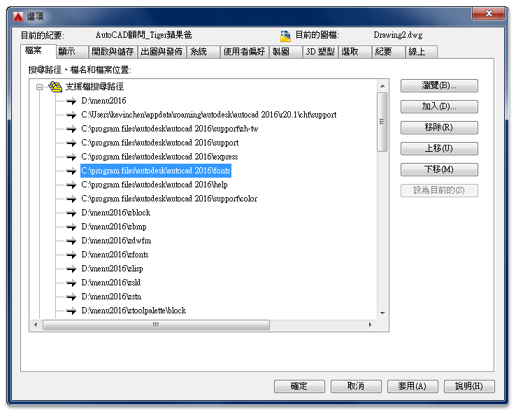

如果載點失效請通知我們。
2016-02-22 補充：
字體檔位置：
C:\Program Files\autodesk\AutoCAD 版本\fonts

C:\Program Files\AutoCAD 版本\fonts（2011 以下版本）
相關主題討論：
DWG圖檔找不到大字體(SHX檔)之「替代大字體」解決方案
[教學]AutoCAD新增字型搜尋路徑
https://www.autocad-tw.com/t887-topic